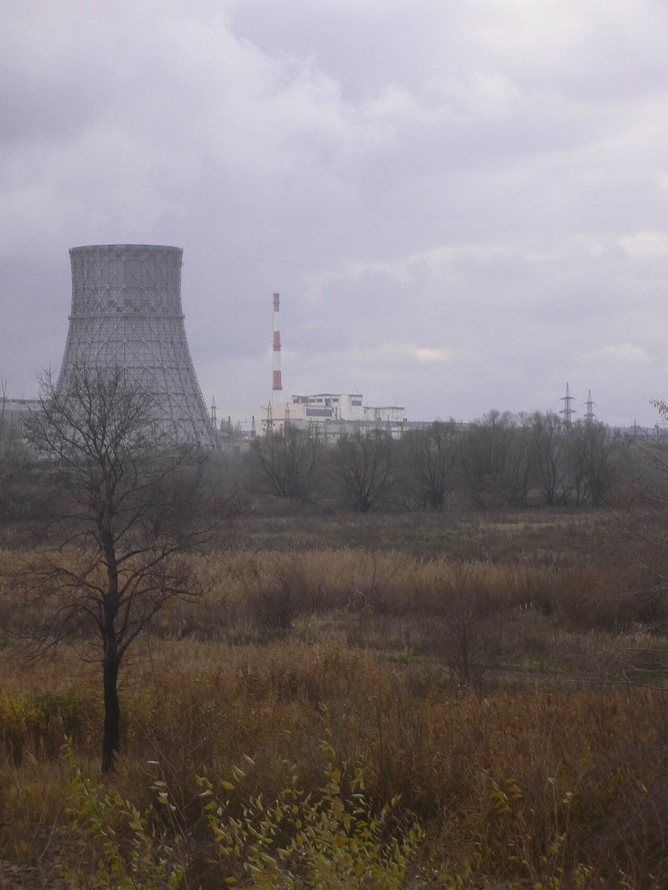
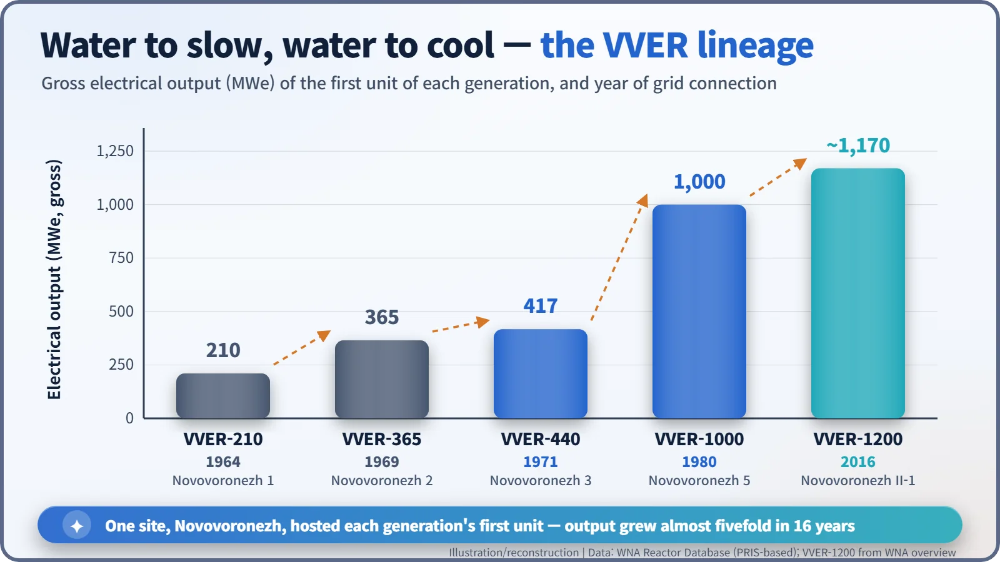
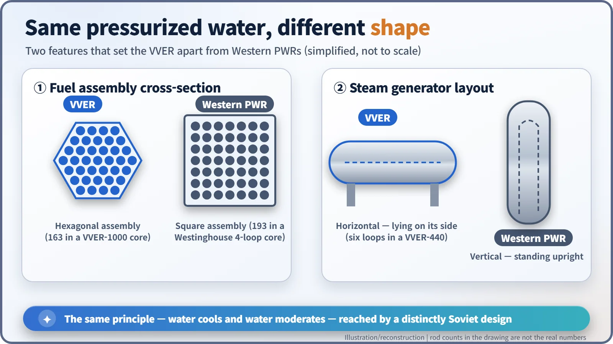
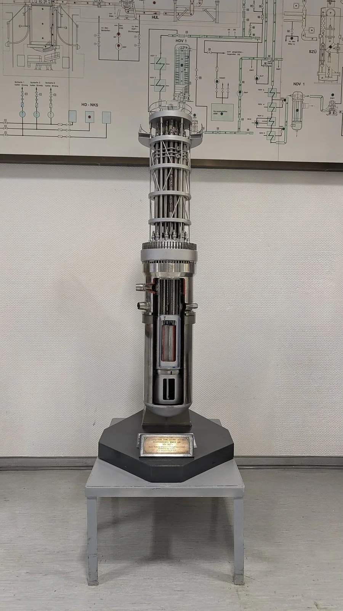
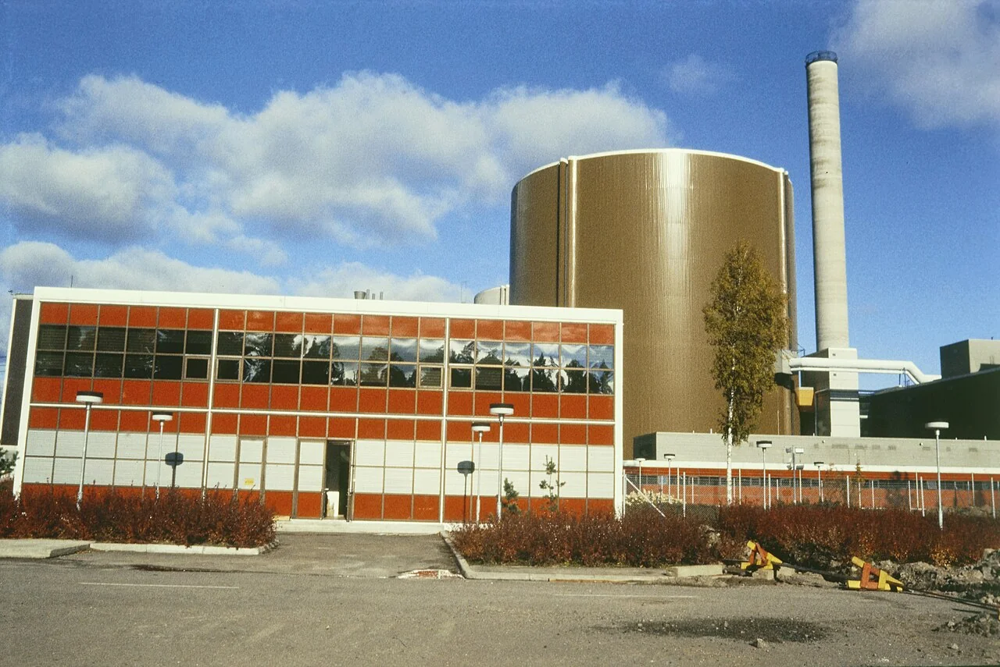

Nuclear History · 207
Water, Water — How the Soviet Union Developed the VVER Pressurized-Water Reactor (1955–1980)
The 'water-water power reactor' used water both to slow neutrons and to cool the core, and grew from 210 MWe to 1,000 MWe on a single site in 16 years.
VVER stands for the Russian "water-water power reactor": water moderates the neutrons and water cools the core. Designed from 1955 by OKB Gidropress with the Kurchatov Institute, the first unit went on the grid at Novovoronezh in 1964, and the line grew from 210 MWe to the 1,000 MWe VVER-1000 by 1980 — while spreading to Eastern Europe and Finland.
A name that says it twice
In Russian it is Vodo-vodyanoi energeticheskii reaktor: literally, the "water-water power reactor", or VVER for short. The doubled water is the whole idea. Water slows the neutrons down (it is the moderator), and water carries the heat away (it is the coolant). In Western terms this is a pressurized water reactor, or PWR. But the Soviet Union reached that same principle with a machine that looks noticeably different, and that machine went on to spread to more than ten countries. [2]
A second road beside graphite
In the 1950s Soviet nuclear power ran mostly on graphite. The reactor at Obninsk, which in 1954 became the first to send electricity into a power grid, pushed water through metal tubes buried in a graphite block, and that "channel" family would later grow into the large RBMK.
Moscow did not put all its eggs in one basket, though. According to Russian-language sources, Savely Feinberg of the Kurchatov Institute proposed a power reactor moderated and cooled by ordinary water, and research began in 1954. In 1955 the design bureau OKB Gidropress in Podolsk, just outside Moscow, took on the engineering. Scientific direction came from Igor Kurchatov (1903–1960) and Anatoly Aleksandrov (1903–1994). The VVER was less the brainchild of a single inventor than the joint product of a design bureau and a research institute. [4] [5]
The first unit on the Don: 210 MWe
The site was Novovoronezh, on the banks of the river Don in the Voronezh region of southern Russia. Construction of unit 1 began on 1 July 1957. According to the World Nuclear Association (WNA) reactor database, the reactor first went critical (sustained its own chain reaction) on 17 December 1963, and it was connected to the grid on 30 September 1964. It produced 760 MW of heat and 210 MW of electricity (gross). [1]
The records do not all agree. Russian-language sources describe the December 1963 start-up as a physics test run with the vessel lid off and date criticality to September 1964, and the model name appears variously as VVER-210, V-1 and V-120. The unit was permanently shut down on 16 February 1988 (WNA). [4]

Novovoronezh became the VVER's proving ground. Unit 2 (365 MWe) joined the grid in 1969, and unit 3 on 27 December 1971. Unit 3 was the prototype of the next generation, the VVER-440. Russian sources say the designers originally aimed for 500 MWe but, lacking a suitable turbine, settled on 440 to match two 220 MW turbines. [1] [4]

Same principle, different shape
You can tell a VVER from a Western PWR at a glance. Its fuel assemblies, the bundles of fuel rods loaded into the core, are hexagonal in cross-section rather than square, and its steam generators lie on their sides instead of standing upright. The VVER-440 has six coolant loops, each with one of these horizontal steam generators. Same answer to the physics question, written in a different hand.


Across borders, and a split between generations
The VVER was an export product almost from the start. A 70 MWe unit at Rheinsberg in East Germany was connected to the grid on 6 May 1966, making it the first VVER outside the Soviet Union. In the 1970s the VVER-440 spread across the countries of Comecon, the Soviet-led economic bloc of Eastern Europe. [1]
By then the VVER-440 had split into two branches. The first-generation V-230, which began with Kola unit 1 in 1973, was not designed from the outset to cope with the rupture of a large coolant pipe. The later V-213 was built to the first Soviet nuclear safety standards: it strengthened emergency core cooling and added a "bubbler condenser" tower, in which steam released in an accident is forced through water to condense it. Outside Russia, the V-230 units were shut down early: in Germany after reunification (1990), and elsewhere during the 2000s as countries prepared to join the European Union, which helped pay for the closures. [2] [6]
The most intriguing case is Loviisa in Finland. Loviisa 1, connected to the grid on 8 February 1977, was a VVER that had been extensively modified at the design stage to add Western instrumentation and control and a Western-style containment. It was later uprated by 18% to 507 MWe net, and in 2023 the Finnish government approved operation until the end of 2050. [3]

Reaching 1,000 MWe, and today
The next target was a million kilowatts. The prototype VVER-1000, Novovoronezh unit 5, was connected to the grid on 31 May 1980. It produced 3,000 MW of heat from a core of 163 hexagonal fuel assemblies. Its standardized successor, the V-320, became the workhorse of the 1980s. [1] [2]
The lineage continues. The first unit of the follow-on VVER-1200 (about 1,170 MWe) was also built at Novovoronezh and connected to the grid in August 2016. The VVER story shows that even one reactor principle, the pressurized water reactor, can evolve along quite different paths, shaped by each country's industry and its approach to safety. [2]